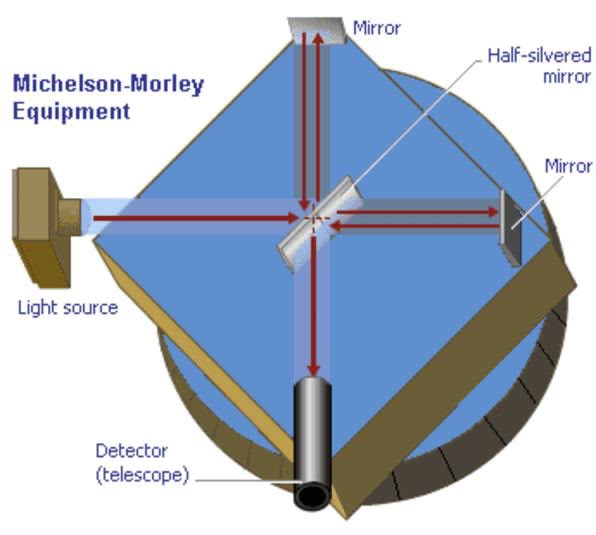

De la manzana al espacio-tiempo
Gravedad, Teoría de la Relatividad y los experimentos que la comprobaron.
1687 Newton · 1887 Michelson y Morley · 1905 y 1915 Einstein · 1919 el eclipse · hoy, el GPS
Lente gravitacional calculada con la ecuación de lente puntual. Mové el puntero sobre la imagen para mover la masa.
¿Qué es la gravedad?
Es el fenómeno por el cual los cuerpos con masa se atraen entre sí, con más intensidad cuanto más masivos son. Es una de las cuatro interacciones fundamentales de la materia.
Newton la explicó con la Ley de Gravitación Universal: todos los cuerpos con masa se atraen.

- F
- fuerza de atracción (N)
- G
- 6,674 × 10⁻¹¹ N·m²/kg²
- m₁, m₂
- masas de los cuerpos (kg)
- r
- distancia entre ellos (m)
Calculadora de Newton
¿Qué es la Teoría de la Relatividad?
Fue desarrollada por Albert Einstein y se divide principalmente en dos partes:
El espacio y el tiempo están relacionados. Las leyes de la física son las mismas para todos los observadores que se mueven a velocidad constante, y la velocidad de la luz en el vacío es constante.
Explica cómo funciona la gravedad: los cuerpos con masa y energía deforman el espacio-tiempo e influyen en el movimiento de otros cuerpos.
Por ejemplo, el Sol curva el espacio-tiempo a su alrededor y la Tierra se desplaza siguiendo esa curvatura, lo que explica su órbita.
El simulador muestra una consecuencia de la Relatividad Especial: un reloj que se mueve muy rápido marcha más lento.
Reloj de luz
¿Qué relación existe entre la gravedad y la relatividad?
Según la Relatividad General, la gravedad es una consecuencia de la curvatura del espacio-tiempo. Los objetos masivos, como el Sol o la Tierra, modifican la geometría del espacio y del tiempo que los rodea, y otros cuerpos se desplazan siguiendo esa geometría curva.
- El Sol tiene una gran masa y curva el espacio-tiempo a su alrededor.
- La Tierra se mueve siguiendo esa curvatura.
- Como resultado, permanece orbitando alrededor del Sol.
- La gravedad es una fuerza de atracción entre masas.
- Describe cómo se atraen los cuerpos.
- Funciona muy bien en situaciones cotidianas.
- La gravedad es una curvatura del espacio-tiempo.
- Explica cómo la masa y la energía modifican el espacio-tiempo.
- Explica fenómenos extremos que Newton no podía describir.
Fuente: Agencia Espacial Europea (ESA), «¿Qué es la gravedad?».
Espacio-tiempo en 3D
Tres pruebas que confirmaron a Einstein
Buscando el éter
Buscaban el éter, el supuesto medio por el que viajaba la luz, con un interferómetro. Si existía, al girar el aparato las franjas se correrían 0,4. No se movieron. Fue la base de la Relatividad Especial.

Interferómetro en 3D
ΔN = 2Lv² / (λc²), con brazos de L = 11 m (luz reflejada varias veces) y λ = 500 nm.
43″ que Newton no explicaba
La órbita de Mercurio gira lentamente. Los otros planetas explicaban casi todo ese giro, pero sobraban 43″ por siglo. En 1915 la Relatividad General dio exactamente ese valor.
Pruebas posteriores: Pound y Rebka (1959), relojes atómicos en aviones de Hafele y Keating (1971), ondas gravitacionales de LIGO (2015).
Perihelio de Mercurio
Δφ = 6πGM / (c²a(1 − e²)) por vuelta, con a = 57,9 millones de km y e = 0,2056.
La luz se curva cerca del Sol
Einstein predijo que el Sol desviaría la luz de las estrellas. Eddington lo midió en el eclipse del 29 de mayo de 1919, en Sobral (Brasil) y Príncipe (África). El resultado fue compatible con Einstein: el doble de lo que daba Newton.

Desviación de la luz
Ángulo dibujado 12.000 veces más grande. ″ = segundo de arco (1/3600 de grado).
La Relatividad en la sociedad
La Teoría de la Relatividad no quedó en los libros: la usamos todos los días. El GPS del celular funciona porque se corrigen los relojes de los satélites, que marchan un poquito más rápido que los de la Tierra; sin esa corrección se equivocaría unos 11 km por día. Y con E = mc² se explica la energía de centrales argentinas como Atucha y Embalse. Pero Einstein no solo cambió la tecnología: también cambió cómo vemos el Universo.
Fuentes: Revista de Enseñanza de la Física, Universidad Nacional de Córdoba (2008), sobre las correcciones relativistas del GPS · Comisión Nacional de Energía Atómica (CNEA), «Sector nuclear».
Satélites GPS alrededor de la Tierra
Ver más números
La Relatividad y el Universo
Antes se creía que el Universo era fijo y eterno. La Relatividad General mostró que se expande, y eso llevó a la idea del Big Bang: un comienzo hace unos 13.800 millones de años. También predijo los agujeros negros. Así, Einstein cambió tanto nuestra vida diaria como nuestra idea del Universo.
Fuentes: Planetario de la Ciudad de Buenos Aires Galileo Galilei, revista Si Muove: «Cinco pasos hacia el Big Bang», de Juan Carlos Forte (CONICET) · CONICET, divulgación de Gustavo E. Romero sobre Relatividad General y agujeros negros.
El Universo se expande
Ver más
Cada punto es una galaxia. Las más lejanas se alejan más rápido. Calculado con las ecuaciones de Einstein (Ωm = 0,31, ΩΛ = 0,69, H₀ = 67,7 km/s por megapársec).
Newton no estaba equivocado: Einstein lo amplió
Para Newton, una fuerza entre masas. Para Einstein, la curvatura del espacio-tiempo.
El tiempo y el espacio dependen del movimiento y de la gravedad. La luz es el límite.
Michelson-Morley, Mercurio, el eclipse de 1919, relojes atómicos y LIGO la confirmaron.
Hoy la usamos sin darnos cuenta: cada vez que abrimos el GPS del celular.
¡Gracias! ¿Preguntas?
La misma ley arma el Sistema Solar
Con poca velocidad un planeta cae hacia la estrella; con la justa queda en órbita; con demasiada, escapa. Las órbitas son elipses, como describió Kepler.
- Tocá el plano para agregar un planeta con la velocidad elegida, y arrastrá para girar la vista.
- Velocidad circular: v = √(GM / r). Velocidad de escape: √2 veces más.
Órbitas en 3D
Tiempo cerca de una masa y E = mc²
Tiempo cerca de una masa
√(1 − 2GM / rc²): dilatación gravitacional del tiempo (solución de Schwarzschild).
E = mc²
Bibliografía
- Newton, I. (1687). Philosophiæ Naturalis Principia Mathematica. Londres.
- Michelson, A. A. y Morley, E. W. (1887). On the Relative Motion of the Earth and the Luminiferous Ether. American Journal of Science, 34, 333–345.
- Einstein, A. (1905). Zur Elektrodynamik bewegter Körper. Annalen der Physik, 17, 891–921.
- Einstein, A. (1916). Die Grundlage der allgemeinen Relativitätstheorie. Annalen der Physik, 49, 769–822.
- Dyson, F. W., Eddington, A. S. y Davidson, C. (1920). A Determination of the Deflection of Light by the Sun's Gravitational Field. Philosophical Transactions of the Royal Society A, 220, 291–333.
- Pound, R. V. y Rebka, G. A. (1960). Apparent Weight of Photons. Physical Review Letters, 4, 337.
- Hafele, J. C. y Keating, R. E. (1972). Around-the-World Atomic Clocks. Science, 177, 166–170.
- Ashby, N. (2003). Relativity in the Global Positioning System. Living Reviews in Relativity, 6, 1.
- Abbott, B. P. et al. (LIGO y Virgo) (2016). Observation of Gravitational Waves from a Binary Black Hole Merger. Physical Review Letters, 116, 061102.
- Hawking, S. (1988). Historia del tiempo: del Big Bang a los agujeros negros. Crítica.
- Fuentes argentinas (Tópico 5): Comisión Nacional de Energía Atómica (CNEA). «Sector nuclear». argentina.gob.ar/cnea/sector-nuclear
- Revista de Enseñanza de la Física (2008). Universidad Nacional de Córdoba. Artículo sobre las correcciones relativistas en los satélites GPS. revistas.unc.edu.ar/index.php/revistaEF
- Forte, J. C. «Cinco pasos hacia el Big Bang». Si Muove, revista del Planetario de la Ciudad de Buenos Aires Galileo Galilei. planetario.buenosaires.gob.ar
- CONICET. Notas de divulgación con Gustavo E. Romero (Instituto Argentino de Radioastronomía) sobre Relatividad General. conicet.gov.ar
- Agencia Espacial Europea (ESA). ¿Qué es la gravedad? Disponible en: esa.int/es/articles/about-us/who-we-are/member-states/spain/que-es-la-gravedad
- Geoenciclopedia. Gravedad: Ley de Gravitación Universal.